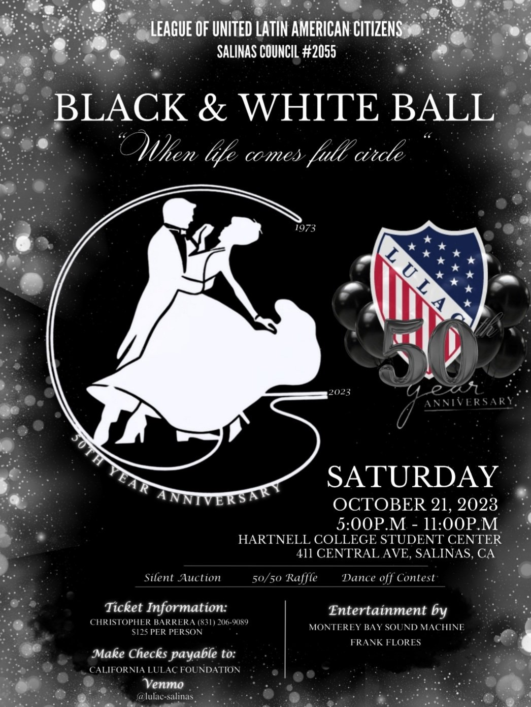
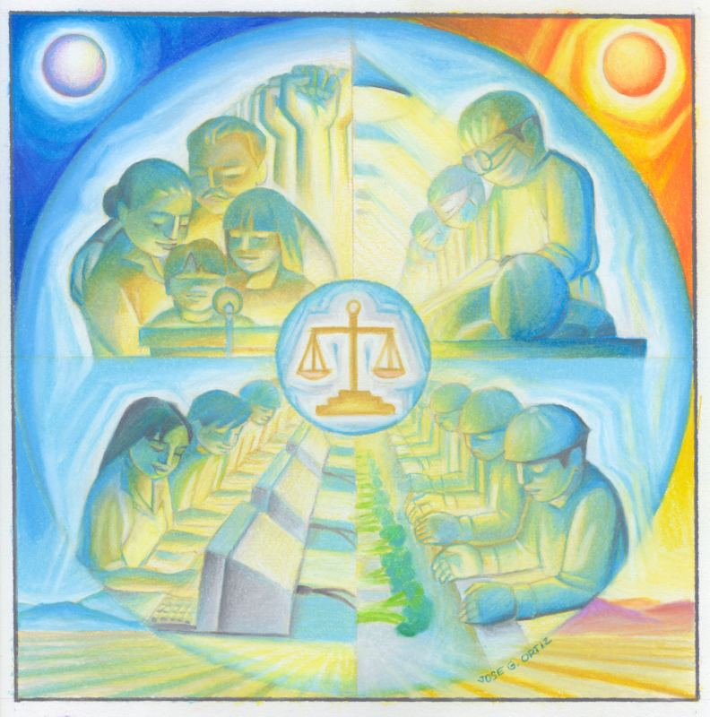
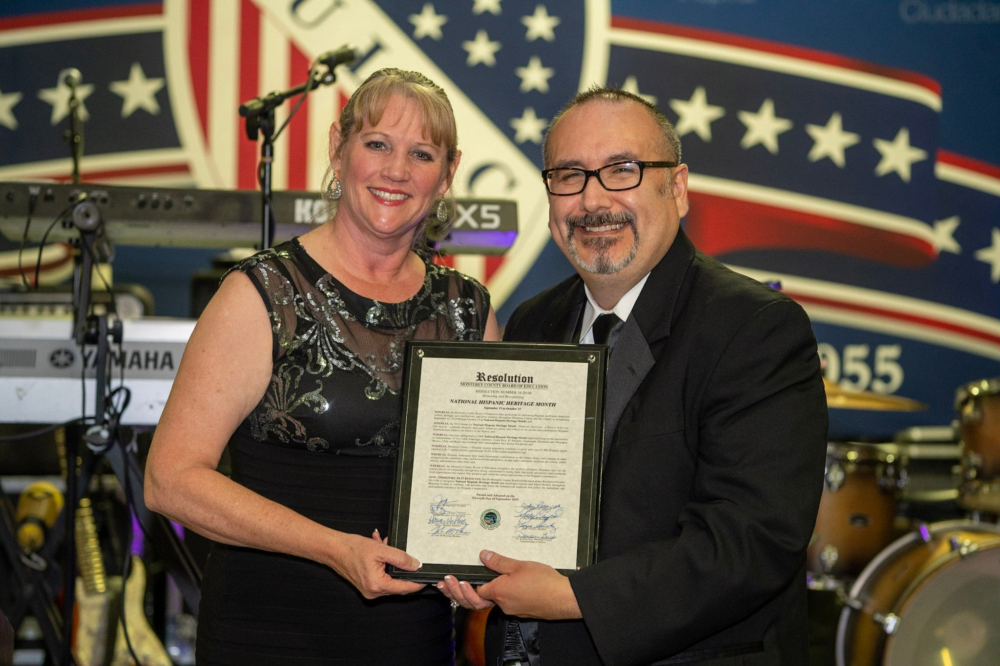
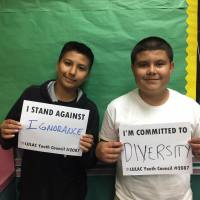

Held October 21, 2023
Black & White Ball and 50th Anniversary
Our 50th anniversary gala at the Hartnell College Student Center. Photos from the evening are up.
See the photosWe are the Salinas council of the League of United Latin American Citizens. Since 1973 we have run supportive services, community programs, and leadership development for Hispanic families in the Salinas Valley.

Council #2055 meets in Salinas and welcomes members and guests. Call or email for the next meeting date, time, and location.

Our 50th anniversary gala at the Hartnell College Student Center. Photos from the evening are up.
See the photos
EventFifty years of Council #2055, celebrated at Hartnell College.
 Community
Community
Food distribution and support for Salinas families during the pandemic.

YouthOur youth council for Salinas students and young adults.
The six areas LULAC organizes around, in Salinas and nationwide.
LULAC is the largest and oldest Hispanic civil rights organization in the United States.
Founded in 1929, LULAC advances the economic condition, educational attainment, political influence, housing, health, and civil rights of Hispanic Americans through more than 1,000 councils nationwide. Council #2055 has been the Salinas council since 1973.